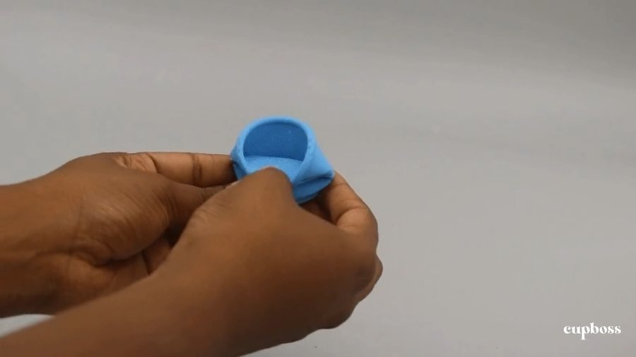
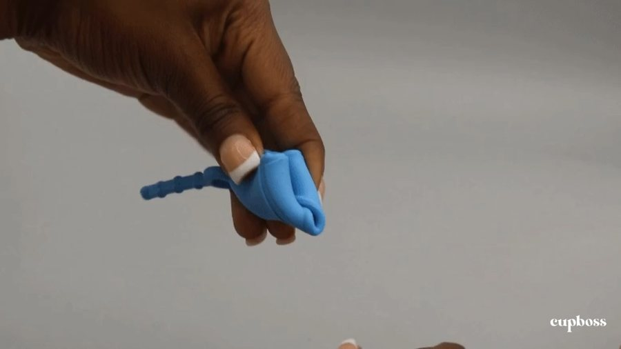

CupBoss
From Beginner to Boss. Boss your flow.
Starting and managing your period can be empowering — but it can also be exhausting. For decades, pads and tampons have been the default: single-use, synthetic, costly, and carrying risks like odor and toxic shock syndrome. Menstrual cups promised something better — longer wear, medical-grade materials, and years of sustainable use at a fraction of the cost.
But through our own experiences as first-time users, we found cups weren’t built for beginners — the fear, pain, and uncertainty of that first try were never addressed. So we created CupBoss: a menstrual cup with origami folds and a longer, ribbed string, making insertion and removal easier, less painful, and less scary for first-timers. The experience starts before you even touch the cup — educational packaging walks you through insertion and removal, with a hands-on practice feature built right in, so you’re comfortable with the motion before using the real thing.
the origami fold — see it in action


Boss up and learn about the process!
Project detailsA two-quarter, team-based capstone project drawing on the methodology and skills developed throughout the Product Design major. Students will form a team, identify an opportunity space of interest, and design and build a product — digital, physical, or experiential — to bring it to life.
Research & Insight
We interviewed over 50 menstruators and found that most first-time cup users shared the same fears — pain, the size of the cup, and the worry of it getting stuck. We wanted to help them build confidence, reduce the fear and stigma around cups, and give them a low-stakes space to practice before the real thing. That’s how we landed on our design: a physical redesign of the cup, paired with educational resources built right into the unboxing experience.
CAD & Iteration
Using Autodesk Fusion 360, we designed the cup itself, then used it again to CAD the molds needed to bring it to life. We went through many iterations before landing on a shape that felt right.
Material Testing
We tested different silicone blends to get the texture and durometer just right — sturdy enough to hold its shape, but softer than a standard cup to ease the pain of insertion.
Educational Packaging
We built the learning experience directly into the packaging itself — a practice opening at its center lets users fold, insert, and remove the cup themselves before trying it for real.
Acknowledgements
Huge thanks to my incredible team — Ameera Waterford, Lanna Wang, and Yaayaa Pajibo. It was truly an honor to work with them. Here we are receiving the Robert H. McKim Award, given to the team in Stanford’s Product Design Capstone class that best embodies the spirit of the course: human-centered design, done in service of the community!